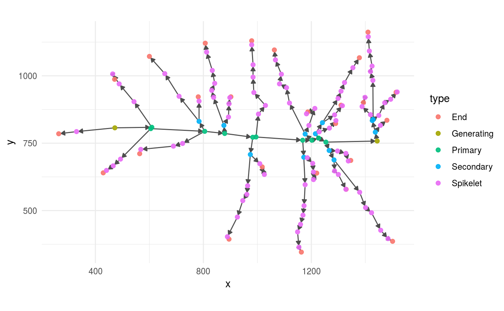
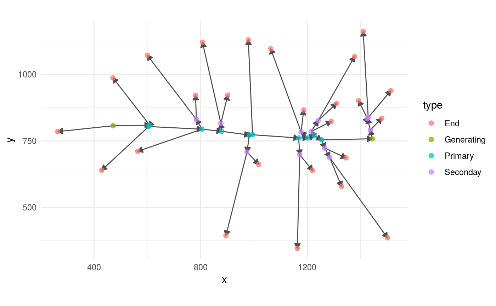
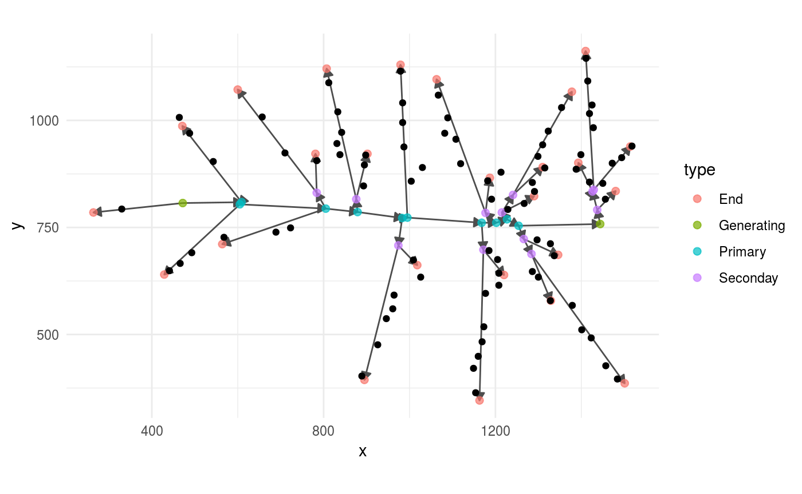
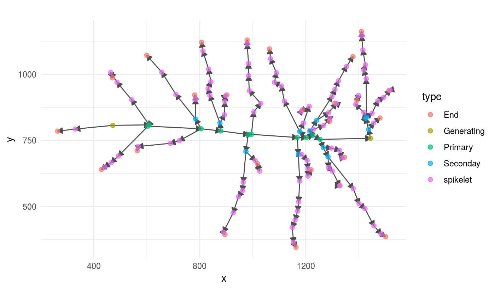

01 - Load Panicles Files Into R
Otho Mantegazza
2019-03-13
Source:vignettes/01-load-files.Rmd
01-load-files.RmdRead Panicle XML files
The software ptrap scans pictures of rice panicles and outputs their architecture in two XML files:
- A structure file:
- One file, with extension
.ricepr, stores the xy coordinates of each element of a panicle besides spikelets/grains. This file also stores the topology of those panicle elements in a directed graph. - A grain file:
- A second file, with extension
.ricegr, store the xy coordinates of each spikelet.
We have included examples of those files in this package. You can access these examples online here or locally in the folder ptrapr/extdata 1.
Easily read and plot the full panicle
We provide a convenient function that loads a full panicle in R: read_full_panicle(). This function reads a file that stores the panicle architecture (that has extension .ricepr) and its counterpart that stores the grain coordinates (that has extension .ricegr) and merges them together.
This function requires the path to both files as argument.
We provide examples of .ricepr and .ricegr files bundled in this package, with the following lines of code you can access those files and load them into R:
# find a .ricepr file
structure_path <- system.file("extdata/1_1_6307.ricepr",
package = "ptrapr")
# and its .ricegr counterpart
grain_path <- system.file("extdata/1_1_6307.ricegr",
package = "ptrapr")
# load them into R and mergge them
full_panicle <- read_full_panicle(pr_file = structure_path,
gr_file = grain_path)The function read_full_panicle() outputs an graph object of class igraph.
This graph can be visualized directly with plot_panicle()
plot_panicle(full_panicle)
If the .ricepr and .ricegr files have the same name
If those two files are in the same folder and they have the same name, like in this case you can provide the path to those files omitting the extension to the function read_full_panicle() in the parameter base_path.
For example, in my case, the path to the .ricepr file is:
structure_path
#> [1] "/home/otho/R/x86_64-pc-linux-gnu-library/3.4/ptrapr/extdata/1_1_6307.ricepr"And the one to the .ricegr file is the same, only the extension changes:
grain_path
#> [1] "/home/otho/R/x86_64-pc-linux-gnu-library/3.4/ptrapr/extdata/1_1_6307.ricegr"So, I can remove the extension from one of those files:
base_path <-
structure_path %>%
str_remove(".ricepr")
base_path
#> [1] "/home/otho/R/x86_64-pc-linux-gnu-library/3.4/ptrapr/extdata/1_1_6307"And use that shortened version to load the full panicle into R with read_full_panicle()
full_panicle <- read_full_panicle(base_path = base_path)The result is exactly the same as above, and this approach might come in handy when you have to loop over the structure of many panicles.
Read Panicle Structure with read_panicle()
From here on, we show all the steps that read_full_panicle() does automatically: how to parse the two files separately, and how they are merged.
The structure and topology of the panicle is stored in the .ricepr XML files.
You can parse and load in R .ricepr files with the function read_panicle().
You can test the read_panicle() function on one of the .ricepr files included in this package:
# find the .ricepr file
structure_path <- system.file("extdata/1_1_6307.ricepr",
package = "ptrapr")
# parse
panicle <-
structure_path %>%
read_panicle()(Note: use system.file() only if you want to access the sample XML files that we provide. If you want to parse your own files, just provide the path to your file to the)
We suggest that you visualize and inspect the panicle that you have loaded into R using the package ggraph.
Besides checking that the structure resembles what you expect, check that all the edges point outward.
For example:
panicle %>%
ggraph(layout = "nicely") +
geom_edge_link(arrow = grid::arrow(length = unit(0.08,
"inches"),
type = "closed"),
colour = "grey30") +
geom_node_point(aes(colour = type),
size = 2,
alpha =.7) +
coord_fixed()
Read Grain Coordinates with read_grains()
Likewise, we provide a sample .ricegr file. This file stores coordinates for all the grains on the panicle, but no structural / topological information.
grain_path <- system.file("extdata/1_1_6307.ricegr",
package = "ptrapr")
grains <-
grain_path %>%
read_grains()The function read_grains() parses and loads .ricegr files into R, but leaves us the challenge to integrate those points into the panicle graph. This is how they appear.
ggplot(grains,
aes(x = x,
y = y)) +
geom_point() +
coord_fixed()
Merge Grains into the Panicle Graph with add_all_grains()
Including grains into the panicle graph is a non trivial task with no perfect solution. We had best results by assigning the grain to the closest branch and by splitting the branch on the grain itself, creating a new intermediate node.
You can do this with the function add_all_grains().
full_panicle <-
panicle %>%
add_all_grains(grains)For example, this is how the panicle graphs and the grains look before adding the grains. As you can see, the grains are detached from the main panicle graph.
panicle %>%
ggraph(layout = "nicely") +
geom_edge_link(arrow = grid::arrow(length = unit(0.08,
"inches"),
type = "closed"),
colour = "grey30") +
geom_node_point(aes(colour = type),
size = 2,
alpha =.7) +
geom_point(data = grains,
aes(x = x, y = y)) +
coord_fixed()
And this is how it looks after adding the grains.
full_panicle %>%
ggraph(layout = "nicely") +
geom_edge_link(arrow = grid::arrow(length = unit(0.08,
"inches"),
type = "closed"),
colour = "grey30") +
geom_node_point(aes(colour = type),
size = 2,
alpha =.7) +
coord_fixed() 
Locate your local package folder with the function::
find.package("ptrapr").↩